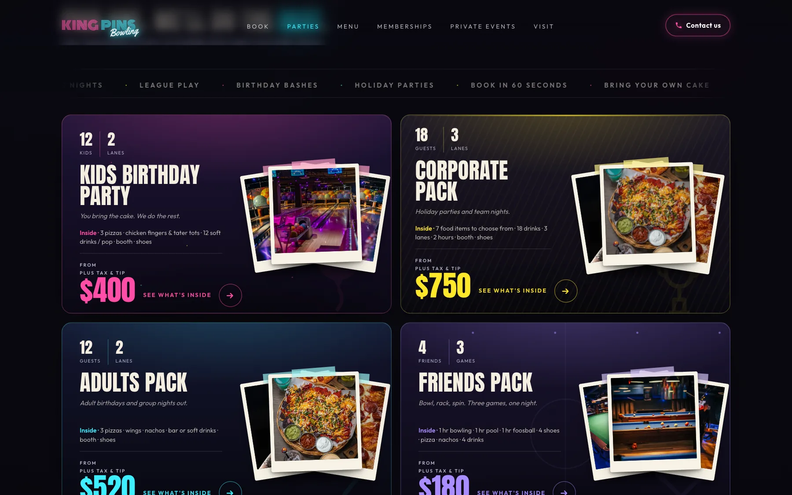
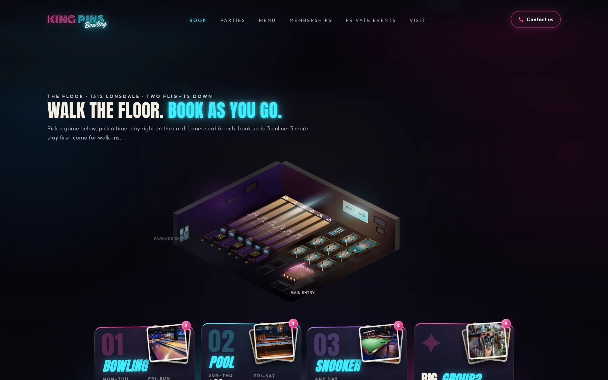

38% of weekday party packs started before the kitchen opened.
The owner wanted none before 5 PM. Cutting those times could cost bookings. I kept the rule and made the site say why.


104 of 271 weekday packs, measured against today’s kitchen hours. Before: booking.kingpinsbowl.ca in January 2024, from the Internet Archive.
Now anyone can book, parties included, without a phone call.
Pick bowling, pool or snooker on a map of the floor. Packs go to the party lanes on their own, and no lane can be booked twice.


Staff see every booking on their phone, and know when a party is coming.
One app instead of WordPress tabs, with alerts only for bookings that need prep.
Shown with the demo bookings built into the app, not real guests.

- Money to chase sits on top: Groupon codes and unpaid payment links.
- The next shift at a glance.
- Lane, length and total on every booking, so nobody opens Stripe.
Then I rebuilt the look from scratch.
The floor map eases into the zone you pick, poster scenes are staged in Blender, and the same look runs from the site to the sandwich boards.


Back to the kitchen.
QR food orders tied to the lane booking, so every order reaches the kitchen already tagged to its lane. Then tournaments, with sign-ups for the first ones already open.